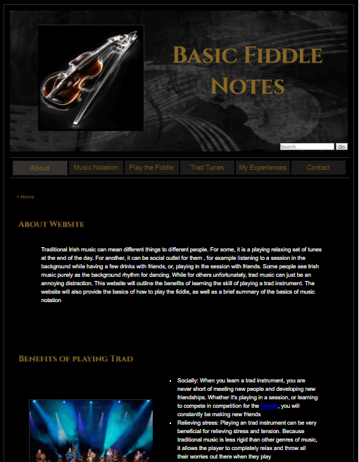

Web Development
Web development is a broad term for the work involved in developing a website on the Internet (World Wide Web) or an intranet (a private network). It ranges from developing simple static single pages of plain text to building complex web-based internet applications.
This module provides learners with an understanding of web development technologies and the skills required to develop websites with dynamic content that conform to W3C standards
Topics covered in this module include:
- Understanding the structure and operation of the World Wide Web.
-
Developing HTML Web Pages.
HyperText Markup Language (HTML) is a markup language used to create electronic documents that are displayed on the World Wide Web. It is a formatting system for displaying text, graphics, and audio retrieved over the Internet on a computer monitor. Without HTML, a browser would not know how to display text, load images or other elements. -
Applying Cascading Style Sheets (CSS) to web pages.
CSS files are the layout and design for a web page. CSS is the language for describing the presentation of Web pages, including colors, layout, and fonts. -
Developing web pages that conform to W3C standards.
The World Wide Web Consortium (W3C) is an international community where Member organizations, a full-time staff, and the public work together to develop Web standards. (www.w3.org) - Use JavaScript to add dynamic content to web pages. (For information on Javascript - See Web Programming module)
-
Publishing and maintaining a website.
This module also covers how to deploy a website on a Github repository, and how to alter code once deployed via GitBash.
The following are examples of the work I completed for this module in Semester 1:
HTML Timetable
This was our first assigment for this module. We had to create web page containing a copy of our timetable with HTML and CSS, and validate our code using validator.w3.org

Me, Myself and I
This was our first attempt at building a website. The brief of the assignment was to create a website based on a subject we are interested in. As I play the fiddle, I decided to make a website to teach people the basics about learning traditional Irish music on the fiddle. The website was built using HTML and CSS. I sourced some of the images from Creative Commons (a very useful website for free resources) and created the diagrams using Adobe Illustrator and Adobe Photoshop
